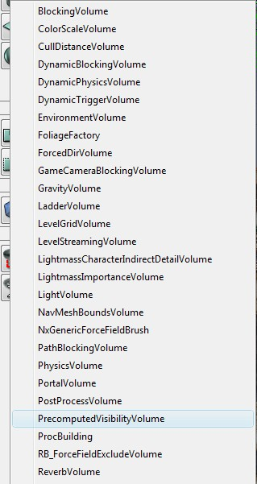
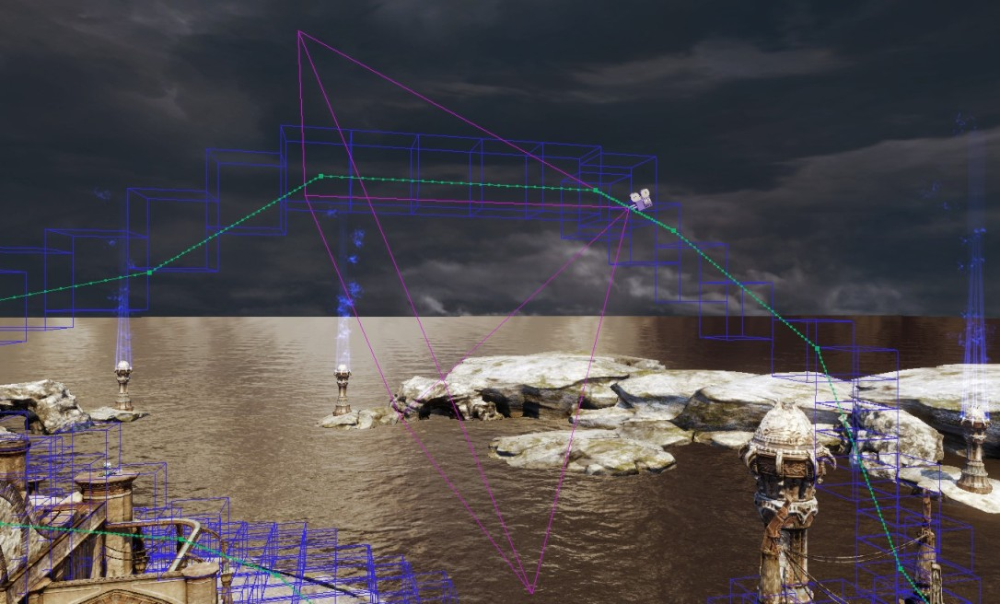

UDN
Search public documentation:
PrecomputedVisibilityCH
English Translation
日本語訳
한국어
Interested in the Unreal Engine?
Visit the Unreal Technology site.
Looking for jobs and company info?
Check out the Epic games site.
Questions about support via UDN?
Contact the UDN Staff
日本語訳
한국어
Interested in the Unreal Engine?
Visit the Unreal Technology site.
Looking for jobs and company info?
Check out the Epic games site.
Questions about support via UDN?
Contact the UDN Staff
预计算可见性
文档变更记录：由 Daniel Wright 创建。
概述
将游戏设置为使用预计算可见性
- PlayAreaHeight - 相机可以在表面上方的高度。这通常是最高的玩家眼睛高度 + 跳动高度。默认值是 220。
将关卡设置为使用预计算可见性

下一步，在 View（视图）->WorldInfo（世界信息）->PrecomputedVisibility（预计算可见性）下方启用 bPrecomputeVisibility（预计算可见性），然后为您的关卡构建光照。当相机在可见性单元格内部时，渲染器将剔除任何已确定被遮挡的对象。单元格放置
 该图片会显示沿着 matinee 相机活动轨迹放置的蓝色可见性网格单元：
该图片会显示沿着 matinee 相机活动轨迹放置的蓝色可见性网格单元：

可视化结果
- 首先，设置关卡预计算可见性和构建光照。
- 设置您的视口。1x1 垂直分屏可以正常工作。所有视图需要启用实时更新。将您的透视图视口移至游戏区域内（在可视性体积内部，稍微靠近地面），这样它才会处于一个单元格内部。您将会知道，当您在控制台上输入‘stat initviews’并为透视图启用统计时，为‘Statically Occluded Primitives（静态遮挡的图元）’赋予一个非零值的情况下，它才会有用。
- 将‘ToggleOcclusion（触发遮挡）’键入控制台，关闭动态遮挡系统。您的记录中应该会收到‘现在已禁用遮挡查询’消息。这将会使我们只浏览预计算遮挡的结果。
- 在透视图视图中，单击视口下拉菜单中的‘视图踢除/遮挡’。
 下面是同一场景，只是将相机稍稍移向任意可见性网格单元的外侧，所以不会发生遮挡，注意右侧边框中的新网格物体：
下面是同一场景，只是将相机稍稍移向任意可见性网格单元的外侧，所以不会发生遮挡，注意右侧边框中的新网格物体：

可见性设置

相关统计数据
- 进行平截头体踢除之后，‘stat initviews’下方的‘Statically occluded primitives（静态遮挡的图元）’会显示通过预计算可视性确定为可视的图元数目。‘Occluded primitives（遮挡的图元）’会显示通过预计算可见性和动态遮挡系统确定为不可视的图元数目。这两种统计数据的不同之处是，动态遮挡系统确定的图元数目已剔除预计算可见性遗漏的数目。当预计算可见性正常工作时，‘Statically occluded primitives（静态遮挡的图元）’的数目应该在‘Occluded primitives（遮挡的图元）’的 50-80% 之间。预计算可见性会剔除相对较少的对象，因为它会为大型网格单元存储信息，而不会处理动态或遮罩的遮挡物（请参阅“限制”部分）。*请注意：* 该统计数据在游戏或 PIE 中最可靠，在编辑器中并没那么可靠，这是因为所有调试材料都与编辑器有关。
- ‘stat initviews’下方的‘Decompress Occlusion（解压缩遮挡）’会显示解压缩预计算可见性所用时间。
- ‘stat memory’下方的‘Precomputed Visibility Memory（预计算可见性内存）’会显示预计算可见性所用的运行时内存。*请注意：* 该统计数据在 PIE 中并不可靠，请转而在编辑器或游戏中查看，因为在 PIE 中 PIE. 和编辑器内存都要计算。
结果
- 1739 图元已经静态地遮挡了超出 2180 个遮挡总数
- 在 Xbox 360 上，使用预计算遮挡可以节省 2.7 毫秒的渲染线程时间（不使用预计算遮挡大概需要 35.4 毫秒 ->32.7 毫秒）。注意，使用预计算可见性的主要优点是立即作用，而动态遮挡系统要过一会才可以集中汇合。所以第一次拐弯或快速旋转视角的时候帧时间最好应该启用预计算可见性，但是准确估计这些情况很难。
- 预计算可见性数据 627Kb
- 移动到一个新的区域并解压缩该区域的遮挡时，会有 1 毫秒的短暂帧停顿
限制
- 无法处理可移动对象或可移动遮挡物
- 无法处理非不透明遮挡物，因为遮罩的遮挡物通常会有难以检测到的小孔
- 只会将网格单元放置在表面上方，所以对于具有飞行模式的游戏益处不大
- 无法有效地处理动态载入关卡，所有数据都存储在永久关卡中，而不是使用动态载入关卡载入载出
- 只会遮挡静态阴影投射三角形。这就意味着一个光照贴图的 interpactor 会在它本不应该遮挡的时候会遮挡，而不会投射阴影的不可移动对象也会在本该遮挡的时候不遮挡。
调试可见性问题
-
TogglePrecomputedVisibility- 启动使用预计算可见性数据。 -
ShowPrecomputedVisibility- 启动预计算可见性单元的调试可视化。